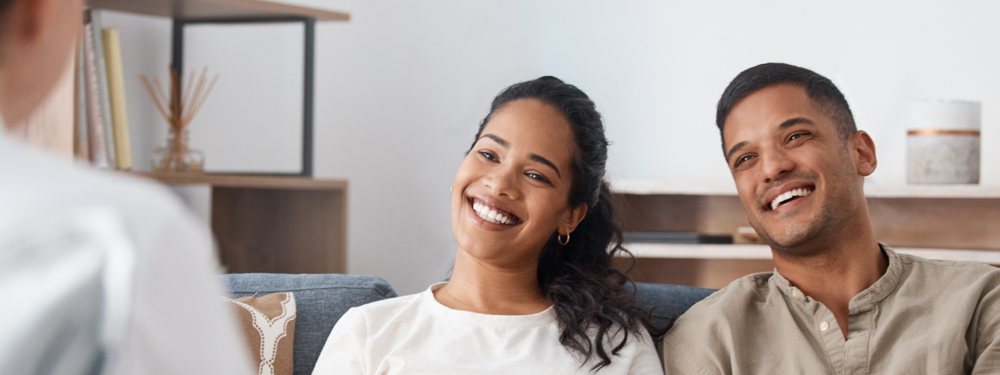
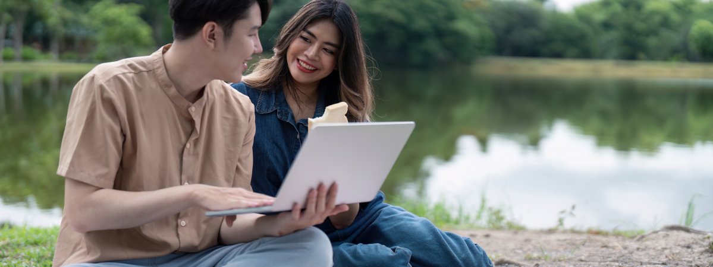
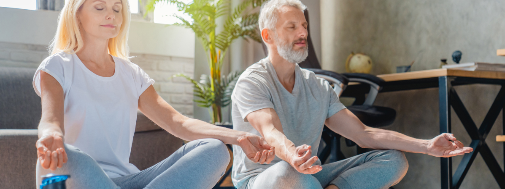

Therapy
At Couples Resort, we recognize that every relationship can benefit from dedicated time to reconnect and strengthen bonds. Our exclusive Couples Therapy Retreat is designed to provide couples with enriching activities that foster intimacy, enhance communication, and deepen emotional connections. Set against the backdrop of our serene resort, this retreat offers a unique opportunity to step away from daily distractions and focus solely on each other.
During your stay, you'll engage in thoughtfully curated activities led by a dedicated couples therapist, who will guide you through experiences designed to promote teamwork and understanding. Whether you’re navigating challenges or simply seeking to enhance your connection, our retreat is tailored to meet your needs and help you grow together. A minimum stay of three nights is required to qualify for this exclusive retreat.

Communication
In our Guided Communication Workshops, couples will learn effective communication techniques through interactive exercises. Led by an experienced therapist, these workshops focus on active listening, expressing needs, and resolving conflicts in a constructive manner.
Activities May Include:
- Role-Playing Scenarios: Couples practice real-life situations to improve their communication skills.
- The "I" Statement Exercise: Learn how to express feelings without assigning blame, fostering understanding.
- Active Listening Drills: Partners take turns sharing thoughts while the other practices reflective listening.
By practicing these skills in a safe space, you'll gain valuable tools to navigate conversations with compassion and clarity. The workshops encourage open dialogue and provide strategies for maintaining healthy communication long after your retreat.
Counselling
Take advantage of Personalized Counseling Sessions with our dedicated couples therapist. These sessions provide a safe environment to explore relationship dynamics, address concerns, and set goals for emotional growth. Tailored to your unique needs, these sessions can help strengthen your bond and enhance your understanding of each other. Examples of activities during these sessions include:
- Goal Setting: Identify personal and shared goals for your relationship and create actionable plans.
- Conflict Resolution Techniques: Learn methods for resolving disputes constructively.
- Emotional Check-ins: Regularly assess feelings and concerns to foster ongoing connection.
Couples will leave with actionable insights and techniques that can be integrated into their daily lives, promoting lasting growth.

Meditation
Engage in the Connection Activities that focus on enhancing emotional intimacy and presence. Guided by our therapist, these activities may include mindfulness exercises such as:
- Partner Breathing Exercises: Synchronize breathing patterns to promote relaxation and connection.
- Five Senses Exercise: Engage all five senses together to heighten awareness of each other and the environment.
- Nature Walk Talks: Take guided walks where couples practice being present in nature while reflecting on their relationship.
These sessions promote relaxation and help couples reconnect on a deeper level, fostering a sense of unity and shared experience. This version includes more detailed descriptions for the first two points along with examples of activities while maintaining clarity about the minimum stay requirement.